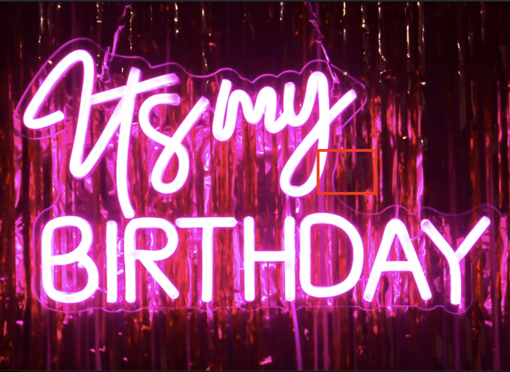

Akash Simon

Summary
I have almost 7+ years of experience in the IT industry and from past 2 years I have changed my carrier towards
fullstack development. Hoping to learn, expand, and adopt to new technology and implement them
Education
Bachelors of Engineering in Computer Science
Work Experience
Pole to Win (Application support Engineer)
- Game Tester
- Investigate and Report bugs
Posiflex Technologies
- Automation Tester
- Java, Selenium, Appium, API
- Worked on both Web and mobile apps
- Worked on multiple domains like WMS, WIP, POS
Solve.Care
- Healthcare Domain
- Blockchain Technology
- API and contract testing
- Java, Selenium, RestAssured and BDD
Pan Asia
- Manual and Automation Testing
- Worked for POS application testing
- Worked on both frontend and backend
- Agile Methodology
Skills
- Application Support
- Manual Testing
- Automation Testing
- Waterfall and Agile Methodologies
Awards and Certifications
Others
My Hobbies
Contact Me
© Akash Simon. All rights reserved.